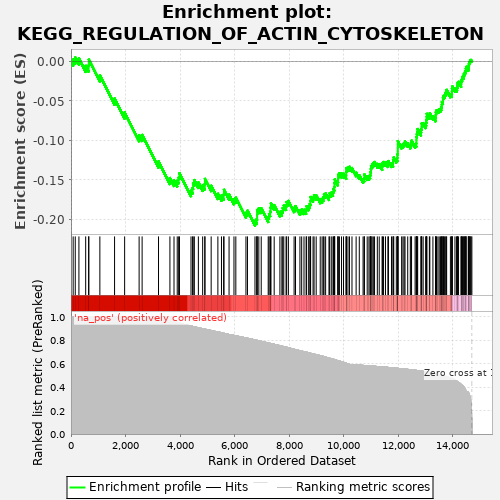
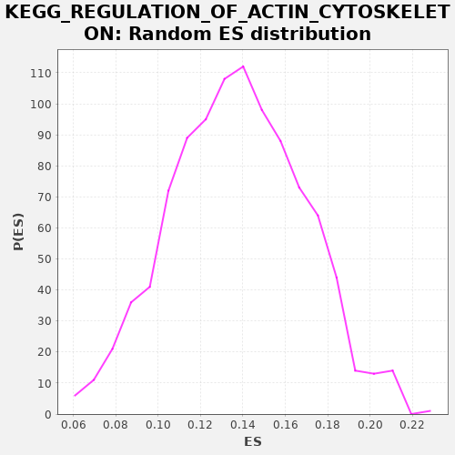

| | | Dataset | drug_embeddings_gsea |
| Phenotype | NoPhenotypeAvailable |
| Upregulated in class | na_neg |
| GeneSet | KEGG_REGULATION_OF_ACTIN_CYTOSKELETON |
| Enrichment Score (ES) | -0.20786148 |
| Normalized Enrichment Score (NES) | NaN |
| Nominal p-value | NaN |
| FDR q-value | 1.0 |
| FWER p-Value | 0.0 |
Table: GSEA Results Summary

Fig 1: Enrichment plot: KEGG_REGULATION_OF_ACTIN_CYTOSKELETON
Profile of the Running ES Score & Positions of GeneSet Members on the Rank Ordered List
| PROBE | GENE SYMBOL | GENE_TITLE | RANK IN GENE LIST | RANK METRIC SCORE | RUNNING ES | CORE ENRICHMENT | | 1 | MYL10 | | | 79 | 1.000 | 0.0024 | No |
| 2 | PIP4K2C | | | 156 | 1.000 | 0.0050 | No |
| 3 | PIP5K1B | | | 290 | 1.000 | 0.0036 | No |
| 4 | MYL2 | | | 538 | 1.000 | -0.0056 | No |
| 5 | BDKRB1 | | | 646 | 1.000 | -0.0052 | No |
| 6 | FGF14 | | | 654 | 1.000 | 0.0022 | No |
| 7 | ITGA10 | | | 1058 | 1.000 | -0.0178 | No |
| 8 | ITGAD | | | 1597 | 1.000 | -0.0471 | No |
| 9 | ITGAX | | | 1966 | 1.000 | -0.0646 | No |
| 10 | MYL7 | | | 2497 | 1.000 | -0.0934 | No |
| 11 | MYL5 | | | 2607 | 1.000 | -0.0931 | No |
| 12 | PIP4K2B | | | 3208 | 1.000 | -0.1266 | No |
| 13 | CHRM1 | | | 3626 | 1.000 | -0.1476 | No |
| 14 | PFN2 | | | 3776 | 0.965 | -0.1503 | No |
| 15 | FGD1 | | | 3894 | 0.952 | -0.1509 | No |
| 16 | INSRR | | | 3947 | 0.949 | -0.1471 | No |
| 17 | IQGAP3 | | | 3976 | 0.946 | -0.1416 | No |
| 18 | PIP5K1A | | | 4399 | 0.921 | -0.1635 | No |
| 19 | MYLPF | | | 4457 | 0.918 | -0.1603 | No |
| 20 | ARHGEF4 | | | 4477 | 0.917 | -0.1544 | No |
| 21 | BRK1 | | | 4521 | 0.915 | -0.1502 | No |
| 22 | ABI2 | | | 4669 | 0.907 | -0.1533 | No |
| 23 | ARHGAP35 | | | 4826 | 0.899 | -0.1570 | No |
| 24 | PIKFYVE | | | 4904 | 0.895 | -0.1553 | No |
| 25 | ITGA7 | | | 4911 | 0.894 | -0.1487 | No |
| 26 | FGD3 | | | 5138 | 0.883 | -0.1574 | No |
| 27 | MYLK2 | | | 5384 | 0.871 | -0.1675 | No |
| 28 | PIP4K2A | | | 5516 | 0.864 | -0.1698 | No |
| 29 | ITGAM | | | 5596 | 0.860 | -0.1685 | No |
| 30 | CYFIP2 | | | 5608 | 0.859 | -0.1625 | No |
| 31 | FGF12 | | | 5794 | 0.849 | -0.1686 | No |
| 32 | MYL9 | | | 5974 | 0.841 | -0.1744 | No |
| 33 | FGF13 | | | 6042 | 0.838 | -0.1725 | No |
| 34 | FGF21 | | | 6413 | 0.820 | -0.1916 | No |
| 35 | MYL12A | | | 6469 | 0.817 | -0.1890 | No |
| 36 | NCKAP1 | | | 6744 | 0.803 | -0.2016 | Yes |
| 37 | SCIN | | | 6808 | 0.800 | -0.1997 | Yes |
| 38 | GNG12 | | | 6822 | 0.799 | -0.1943 | Yes |
| 39 | SLC9A1 | | | 6823 | 0.799 | -0.1881 | Yes |
| 40 | ARPC1A | | | 6885 | 0.795 | -0.1860 | Yes |
| 41 | PDGFD | | | 6973 | 0.791 | -0.1858 | Yes |
| 42 | RRAS2 | | | 7229 | 0.777 | -0.1974 | Yes |
| 43 | PIK3R5 | | | 7260 | 0.776 | -0.1934 | Yes |
| 44 | IQGAP2 | | | 7301 | 0.773 | -0.1901 | Yes |
| 45 | PIP5K1C | | | 7316 | 0.773 | -0.1850 | Yes |
| 46 | NCKAP1L | | | 7329 | 0.772 | -0.1798 | Yes |
| 47 | CHRM5 | | | 7448 | 0.766 | -0.1819 | Yes |
| 48 | TIAM2 | | | 7658 | 0.754 | -0.1904 | Yes |
| 49 | PDGFC | | | 7730 | 0.749 | -0.1895 | Yes |
| 50 | DIAPH3 | | | 7762 | 0.748 | -0.1858 | Yes |
| 51 | MYH14 | | | 7800 | 0.746 | -0.1825 | Yes |
| 52 | TMSB4Y | | | 7884 | 0.741 | -0.1824 | Yes |
| 53 | MRAS | | | 7905 | 0.741 | -0.1780 | Yes |
| 54 | ROCK2 | | | 7969 | 0.736 | -0.1766 | Yes |
| 55 | BAIAP2 | | | 8178 | 0.723 | -0.1853 | Yes |
| 56 | SSH1 | | | 8230 | 0.720 | -0.1832 | Yes |
| 57 | MOS | | | 8392 | 0.711 | -0.1887 | Yes |
| 58 | ARHGEF6 | | | 8456 | 0.707 | -0.1875 | Yes |
| 59 | SSH3 | | | 8541 | 0.702 | -0.1878 | Yes |
| 60 | CHRM2 | | | 8619 | 0.699 | -0.1876 | Yes |
| 61 | ARPC5L | | | 8637 | 0.698 | -0.1834 | Yes |
| 62 | CHRM3 | | | 8712 | 0.693 | -0.1830 | Yes |
| 63 | CD14 | | | 8754 | 0.691 | -0.1805 | Yes |
| 64 | ITGAL | | | 8779 | 0.689 | -0.1767 | Yes |
| 65 | ITGA2 | | | 8784 | 0.689 | -0.1716 | Yes |
| 66 | RAC3 | | | 8873 | 0.683 | -0.1723 | Yes |
| 67 | CYFIP1 | | | 8910 | 0.682 | -0.1695 | Yes |
| 68 | APC2 | | | 8988 | 0.678 | -0.1695 | Yes |
| 69 | ARPC2 | | | 9136 | 0.668 | -0.1744 | Yes |
| 70 | ARHGEF1 | | | 9204 | 0.664 | -0.1738 | Yes |
| 71 | ENAH | | | 9250 | 0.662 | -0.1718 | Yes |
| 72 | ITGA4 | | | 9276 | 0.660 | -0.1683 | Yes |
| 73 | RAC2 | | | 9334 | 0.656 | -0.1671 | Yes |
| 74 | MYLK | | | 9457 | 0.649 | -0.1704 | Yes |
| 75 | GIT1 | | | 9481 | 0.646 | -0.1670 | Yes |
| 76 | PAK3 | | | 9541 | 0.642 | -0.1660 | Yes |
| 77 | ARPC1B | | | 9604 | 0.639 | -0.1653 | Yes |
| 78 | FGF7 | | | 9621 | 0.638 | -0.1614 | Yes |
| 79 | FGFR4 | | | 9655 | 0.636 | -0.1587 | Yes |
| 80 | SSH2 | | | 9660 | 0.635 | -0.1540 | Yes |
| 81 | FGF10 | | | 9668 | 0.635 | -0.1495 | Yes |
| 82 | TMSB4X | | | 9779 | 0.626 | -0.1522 | Yes |
| 83 | PAK6 | | | 9791 | 0.625 | -0.1481 | Yes |
| 84 | ARHGEF12 | | | 9794 | 0.625 | -0.1434 | Yes |
| 85 | SOS2 | | | 9840 | 0.622 | -0.1416 | Yes |
| 86 | ACTN1 | | | 9917 | 0.617 | -0.1420 | Yes |
| 87 | ACTN2 | | | 9990 | 0.611 | -0.1422 | Yes |
| 88 | ITGA2B | | | 10087 | 0.604 | -0.1441 | Yes |
| 89 | FGF3 | | | 10089 | 0.603 | -0.1394 | Yes |
| 90 | ITGB8 | | | 10094 | 0.603 | -0.1350 | Yes |
| 91 | DIAPH2 | | | 10153 | 0.598 | -0.1343 | Yes |
| 92 | GNA13 | | | 10208 | 0.595 | -0.1334 | Yes |
| 93 | ARHGEF7 | | | 10300 | 0.592 | -0.1350 | Yes |
| 94 | PFN1 | | | 10452 | 0.589 | -0.1408 | Yes |
| 95 | FGF19 | | | 10568 | 0.587 | -0.1442 | Yes |
| 96 | MYLK3 | | | 10707 | 0.585 | -0.1491 | Yes |
| 97 | ARPC5 | | | 10750 | 0.584 | -0.1474 | Yes |
| 98 | ARPC4 | | | 10754 | 0.584 | -0.1431 | Yes |
| 99 | MYL12B | | | 10858 | 0.583 | -0.1456 | Yes |
| 100 | ARPC3 | | | 10922 | 0.581 | -0.1454 | Yes |
| 101 | WASF2 | | | 10964 | 0.581 | -0.1437 | Yes |
| 102 | GNA12 | | | 10979 | 0.580 | -0.1401 | Yes |
| 103 | ITGA8 | | | 10992 | 0.580 | -0.1364 | Yes |
| 104 | PDGFA | | | 11001 | 0.580 | -0.1324 | Yes |
| 105 | ITGA6 | | | 11038 | 0.579 | -0.1304 | Yes |
| 106 | PAK4 | | | 11082 | 0.578 | -0.1288 | Yes |
| 107 | PPP1R12A | | | 11127 | 0.578 | -0.1273 | Yes |
| 108 | MYH10 | | | 11229 | 0.576 | -0.1298 | Yes |
| 109 | PIK3CD | | | 11299 | 0.574 | -0.1301 | Yes |
| 110 | ITGA11 | | | 11407 | 0.573 | -0.1330 | Yes |
| 111 | ITGB4 | | | 11414 | 0.572 | -0.1289 | Yes |
| 112 | FGF23 | | | 11457 | 0.572 | -0.1273 | Yes |
| 113 | FGF4 | | | 11528 | 0.571 | -0.1277 | Yes |
| 114 | PIK3CG | | | 11617 | 0.568 | -0.1293 | Yes |
| 115 | CHRM4 | | | 11637 | 0.568 | -0.1262 | Yes |
| 116 | FGF8 | | | 11748 | 0.566 | -0.1293 | Yes |
| 117 | VCL | | | 11807 | 0.564 | -0.1289 | Yes |
| 118 | PIK3CB | | | 11808 | 0.564 | -0.1245 | Yes |
| 119 | ACTN4 | | | 11831 | 0.564 | -0.1216 | Yes |
| 120 | VAV3 | | | 11925 | 0.562 | -0.1236 | Yes |
| 121 | CFL2 | | | 11965 | 0.560 | -0.1219 | Yes |
| 122 | LIMK1 | | | 11968 | 0.560 | -0.1177 | Yes |
| 123 | FGF17 | | | 11979 | 0.560 | -0.1140 | Yes |
| 124 | FGF6 | | | 11980 | 0.560 | -0.1096 | Yes |
| 125 | FGF18 | | | 11981 | 0.560 | -0.1052 | Yes |
| 126 | FGF9 | | | 11982 | 0.560 | -0.1009 | Yes |
| 127 | DIAPH1 | | | 12120 | 0.557 | -0.1059 | Yes |
| 128 | VAV2 | | | 12169 | 0.556 | -0.1049 | Yes |
| 129 | BDKRB2 | | | 12211 | 0.555 | -0.1034 | Yes |
| 130 | FGF1 | | | 12244 | 0.554 | -0.1013 | Yes |
| 131 | LIMK2 | | | 12343 | 0.551 | -0.1037 | Yes |
| 132 | ITGB7 | | | 12438 | 0.549 | -0.1059 | Yes |
| 133 | SOS1 | | | 12466 | 0.549 | -0.1035 | Yes |
| 134 | F2R | | | 12484 | 0.548 | -0.1004 | Yes |
| 135 | FGF2 | | | 12614 | 0.544 | -0.1050 | Yes |
| 136 | WASL | | | 12659 | 0.543 | -0.1038 | Yes |
| 137 | DOCK1 | | | 12662 | 0.543 | -0.0997 | Yes |
| 138 | EGF | | | 12663 | 0.543 | -0.0954 | Yes |
| 139 | PDGFRA | | | 12679 | 0.542 | -0.0922 | Yes |
| 140 | NRAS | | | 12693 | 0.541 | -0.0889 | Yes |
| 141 | ITGB2 | | | 12708 | 0.541 | -0.0856 | Yes |
| 142 | ITGA5 | | | 12829 | 0.537 | -0.0897 | Yes |
| 143 | ITGB6 | | | 12836 | 0.537 | -0.0859 | Yes |
| 144 | APC | | | 12853 | 0.537 | -0.0828 | Yes |
| 145 | ITGA1 | | | 12854 | 0.537 | -0.0786 | Yes |
| 146 | FGFR2 | | | 12909 | 0.534 | -0.0782 | Yes |
| 147 | ITGA3 | | | 13003 | 0.530 | -0.0804 | Yes |
| 148 | PDGFB | | | 13019 | 0.529 | -0.0773 | Yes |
| 149 | WASF1 | | | 13029 | 0.529 | -0.0738 | Yes |
| 150 | RRAS | | | 13039 | 0.529 | -0.0703 | Yes |
| 151 | FGFR3 | | | 13043 | 0.528 | -0.0664 | Yes |
| 152 | ARAF | | | 13137 | 0.525 | -0.0687 | Yes |
| 153 | FGFR1 | | | 13154 | 0.524 | -0.0657 | Yes |
| 154 | ACTG1 | | | 13267 | 0.520 | -0.0693 | Yes |
| 155 | ITGAV | | | 13364 | 0.515 | -0.0719 | Yes |
| 156 | TIAM1 | | | 13370 | 0.515 | -0.0682 | Yes |
| 157 | ITGB5 | | | 13375 | 0.514 | -0.0645 | Yes |
| 158 | RHOA | | | 13398 | 0.513 | -0.0620 | Yes |
| 159 | RDX | | | 13450 | 0.510 | -0.0615 | Yes |
| 160 | CSK | | | 13497 | 0.506 | -0.0607 | Yes |
| 161 | FGF5 | | | 13543 | 0.504 | -0.0599 | Yes |
| 162 | F2 | | | 13574 | 0.501 | -0.0580 | Yes |
| 163 | PAK1 | | | 13591 | 0.500 | -0.0552 | Yes |
| 164 | WAS | | | 13596 | 0.500 | -0.0516 | Yes |
| 165 | MAP2K2 | | | 13634 | 0.498 | -0.0502 | Yes |
| 166 | PIK3CA | | | 13636 | 0.498 | -0.0464 | Yes |
| 167 | RAC1 | | | 13657 | 0.496 | -0.0439 | Yes |
| 168 | ITGAE | | | 13696 | 0.494 | -0.0427 | Yes |
| 169 | PAK2 | | | 13719 | 0.492 | -0.0403 | Yes |
| 170 | VAV1 | | | 13753 | 0.489 | -0.0388 | Yes |
| 171 | ROCK1 | | | 13770 | 0.488 | -0.0361 | Yes |
| 172 | ITGA9 | | | 13908 | 0.477 | -0.0418 | Yes |
| 173 | MYH9 | | | 13955 | 0.471 | -0.0413 | Yes |
| 174 | PIK3R3 | | | 13963 | 0.471 | -0.0381 | Yes |
| 175 | GSN | | | 13966 | 0.470 | -0.0345 | Yes |
| 176 | PIK3R2 | | | 13979 | 0.469 | -0.0317 | Yes |
| 177 | BRAF | | | 14075 | 0.460 | -0.0346 | Yes |
| 178 | MSN | | | 14133 | 0.452 | -0.0350 | Yes |
| 179 | ITGB3 | | | 14153 | 0.449 | -0.0328 | Yes |
| 180 | CDC42 | | | 14167 | 0.446 | -0.0302 | Yes |
| 181 | HRAS | | | 14175 | 0.445 | -0.0272 | Yes |
| 182 | PPP1CB | | | 14206 | 0.440 | -0.0259 | Yes |
| 183 | BCAR1 | | | 14301 | 0.423 | -0.0290 | Yes |
| 184 | PXN | | | 14303 | 0.423 | -0.0258 | Yes |
| 185 | IQGAP1 | | | 14316 | 0.420 | -0.0233 | Yes |
| 186 | ITGB1 | | | 14339 | 0.415 | -0.0216 | Yes |
| 187 | PDGFRB | | | 14354 | 0.412 | -0.0194 | Yes |
| 188 | PTK2 | | | 14395 | 0.403 | -0.0190 | Yes |
| 189 | CFL1 | | | 14401 | 0.401 | -0.0162 | Yes |
| 190 | KRAS | | | 14429 | 0.393 | -0.0150 | Yes |
| 191 | CRKL | | | 14446 | 0.386 | -0.0130 | Yes |
| 192 | ACTB | | | 14469 | 0.375 | -0.0116 | Yes |
| 193 | MAPK3 | | | 14476 | 0.370 | -0.0091 | Yes |
| 194 | PIK3R1 | | | 14486 | 0.366 | -0.0069 | Yes |
| 195 | RAF1 | | | 14562 | 0.357 | -0.0093 | Yes |
| 196 | MAP2K1 | | | 14579 | 0.351 | -0.0076 | Yes |
| 197 | CRK | | | 14581 | 0.349 | -0.0050 | Yes |
| 198 | PPP1CA | | | 14589 | 0.344 | -0.0028 | Yes |
| 199 | PPP1CC | | | 14598 | 0.340 | -0.0007 | Yes |
| 200 | EZR | | | 14626 | 0.318 | -0.0000 | Yes |
| 201 | FN1 | | | 14636 | 0.305 | 0.0017 | Yes |
| 202 | MAPK1 | | | 14666 | 0.254 | 0.0017 | Yes |
| 203 | EGFR | | | 14695 | 0.054 | 0.0002 | Yes |
Table: GSEA details [plain text format]

Fig 2: KEGG_REGULATION_OF_ACTIN_CYTOSKELETON: Random ES distribution
Gene set null distribution of ES for KEGG_REGULATION_OF_ACTIN_CYTOSKELETON